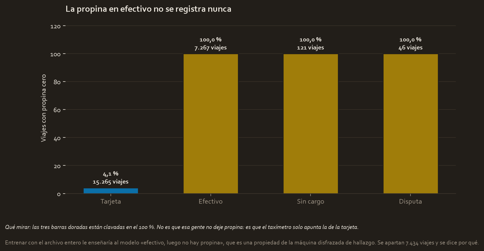
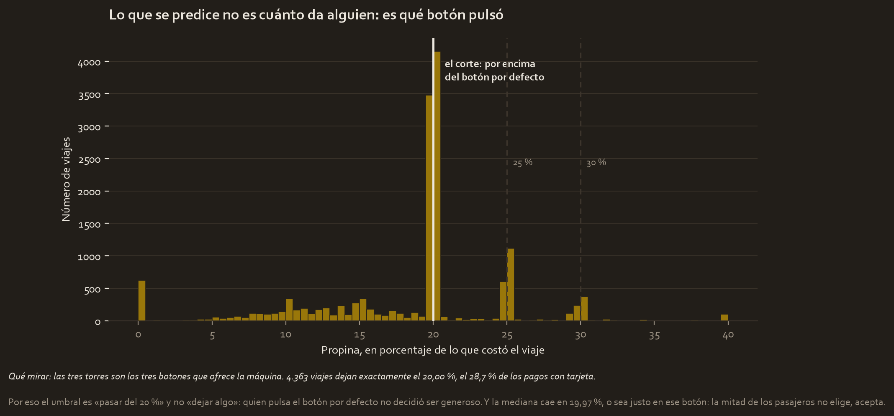
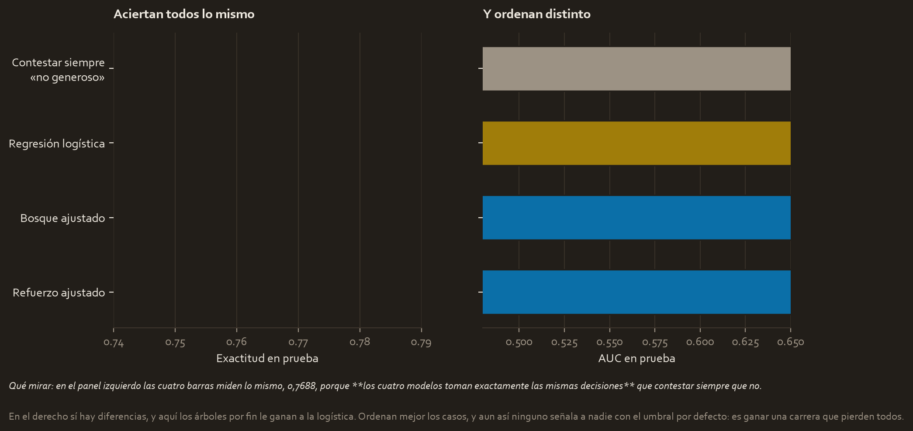
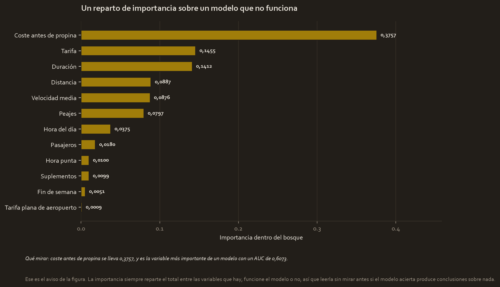

El encargo
La Comisión de Taxis y Limusinas de Nueva York quiere saber quién deja propina generosa, para que el conductor lo sepa antes de aceptar la carrera.
Y la pregunta ética va antes que el modelo, no después. Un sistema que dice al conductor quién va a dar propina puede acabar decidiendo a quién se le para el taxi. Eso es discriminación con apariencia de eficiencia, y hay que decirlo aunque el modelo funcione. Aquí resulta que además no funciona, pero el orden importa: la pregunta se hizo sin saber todavía el resultado.
La pregunta
¿Se puede saber, antes de que acabe el viaje, si el pasajero va a dejar propina generosa?
Los datos
C2_2017_Yellow_Taxi_Trip_Data.csv, 22.699 viajes de 2017. Los mismos del Curso 2 y del Curso 4, con una pregunta completamente distinta.
Lo que hubo que arreglar
Tres cosas, y las tres decidieron el proyecto antes de entrenar nada.
Primero, una fuga comprobada y no supuesta. total_amount incluye la propina: verificado sumando las partes y comparando con el total, coincide en 22.656 de 22.699 viajes. Esa columna contiene la respuesta, así que queda prohibida como variable. El coste antes de propina se reconstruye restándola, y eso sí es lo que el pasajero ve en la pantalla cuando le sale el aviso.
Segundo, el efectivo.

| Tipo de pago | Viajes | Con propina cero |
|---|---|---|
| Tarjeta | 15.265 | 4,1 % |
| Efectivo | 7.267 | 100 % |
| Sin cargo | 121 | 100 % |
| Disputa | 46 | 100 % |
El taxímetro no registra la propina en efectivo. No es que esa gente no dé propina: es que el aparato solo apunta la de la tarjeta.
Entrenar con el archivo entero le enseñaría al modelo «efectivo, luego no hay propina», que es una propiedad de la máquina disfrazada de hallazgo, y produciría un modelo excelente por la razón equivocada. El exemplar oficial hace exactamente eso. Aquí se apartan 7.434 viajes y se dice por qué, quedando 15.203 utilizables.
Tercero, qué significa «generoso», leído de la distribución y no elegido.

| Mediana de la propina con tarjeta | 19,97 % |
| Viajes que dejan exactamente el 20,00 % | 4.363, el 28,7 % |
| Viajes en uno de los tres botones (20, 25, 30) | el 43,1 % |
La distribución tiene tres torres, y son los tres botones que ofrece la máquina. Quien pulsa el botón por defecto no decidió ser generoso: aceptó. Y la mediana cae justo en ese botón, o sea que la mitad de los pasajeros no elige.
Por eso el umbral es por encima del 20 %, y con él los generosos son el 23,11 %.
El control, fijado antes de mirar nada
Con un 23 % de positivos, contestar siempre «no generoso» ya saca 0,7688 de exactitud sin hacer absolutamente nada. Esa es la barra que todo lo demás tiene que superar, y se fija antes de entrenar.
Y la expectativa, escrita antes de ajustar: dar propina es una decisión personal, y las columnas de este archivo describen el viaje. Lo probable es que no se pueda predecir, y si es así el entregable es decirlo con pruebas.
El modelo, y por qué este modelo
Partición en tres, 60/20/20 estratificada: 9.121 de entrenamiento, 3.041 de validación y 3.041 de prueba.
Cuatro familias en validación, y luego búsqueda en rejilla con validación cruzada de cuatro pliegues para las dos de árboles: 24 combinaciones en 41 segundos para el bosque y 36 en 11 para el refuerzo. El campeón, elegido en validación, fue el refuerzo ajustado.
Y la métrica que decide no es la exactitud. Con un 23 % de positivos, la exactitud premia al que no señala a nadie, así que se miran sensibilidad y AUC.
La comparación
Sobre la prueba, mirada una sola vez, con el control dentro:

| Modelo | Exactitud | Sensibilidad | AUC |
|---|---|---|---|
| Contestar siempre «no generoso» | 0,7688 | 0,0000 | 0,5000 |
| Regresión logística | 0,7688 | 0,0000 | 0,5395 |
| Bosque ajustado | 0,7688 | 0,0000 | 0,6073 |
| Refuerzo ajustado | 0,7708 | 0,0128 | 0,6104 |
La logística y el bosque no señalan absolutamente a nadie. Toman exactamente las mismas decisiones que el modelo vago, y por eso su exactitud coincide con la suya hasta el cuarto decimal. El refuerzo detecta al 1,28 % de los generosos.
Y aquí, por primera y única vez en el curso, los árboles le ganan a la logística: 0,6073 y 0,6104 de AUC contra 0,5395.
No significa lo que parece. Ordenan mejor los casos, sí, pero con el umbral por defecto ninguno señala a nadie. Es ganar una carrera que pierden todos.
Un AUC mejor no es un modelo utilizable. El AUC mide si sabes ordenar; la sensibilidad mide si sirves para decidir.
El resultado, traducido
Dar propina generosa es una decisión de la persona, no del viaje. Ni la distancia, ni la duración, ni la hora, ni lo que costó predicen quién pasa del botón por defecto.

Y esa figura lleva su propio aviso. Sale un reparto perfectamente presentable, con el coste antes de propina a la cabeza con 0,3757. Es el reparto de importancia de un modelo con un AUC de 0,6073, o sea de un modelo que no funciona.
La importancia siempre suma 1 entre las variables que le des, acierte el modelo o no. Leerla sin comprobar antes si el modelo sirve produce conclusiones sobre nada.
Qué se decide con esto
- No construir esto. El encargo no se puede cumplir con los datos disponibles, y decirlo con pruebas es el entregable.
- Si de verdad hiciera falta, lo que hay que conseguir es información del pasajero, no más variables del viaje: historial de propinas, si es cliente habitual, la app por la que pidió. Nada de eso está en el archivo.
- Mirar el botón por defecto, que es la palanca de verdad. El 28,7 % de los pasajeros deja exactamente lo que la máquina propone. **Mover ese botón mueve más dinero que cualquier modelo**, y se puede probar con un experimento A/B como los del Curso 3.
- Y no desplegar un sistema que diga al conductor a quién conviene recoger, que era el riesgo declarado al principio.
Limitaciones
- Un año, una ciudad, y el archivo es una muestra de los viajes de 2017.
- Se descartan 7.434 viajes por no tener propina registrada. Si quien paga en efectivo se comporta distinto, esta conclusión no se le aplica.
- El umbral del 20 % es defendible pero no es el único. Con «pasar del 15 %» los generosos serían el 77 % y el problema cambiaría de forma.
- La prueba se miró una vez, después de elegir campeón en validación.
Material completo
Los tres se construyeron aquí. Los CSV se leen de tu carpeta del Curso 3 sin tocarlos, y el proyecto de Waze reparte los datos exactamente igual que el del Curso 4 para que la comparación entre los dos valga.
Informes y notas
- pace_plan.md 04_reports/pace_plan.md 3.5 KB
- executive_summary.md 04_reports/executive_summary.md 4.5 KB
- model_results.json 04_reports/model_results.json 3.3 KB
Código
- automatidata_trees.py 02_scripts/automatidata_trees.py 23.7 KB
- automatidata_curso5.ipynb automatidata_curso5.ipynb 14.0 KB